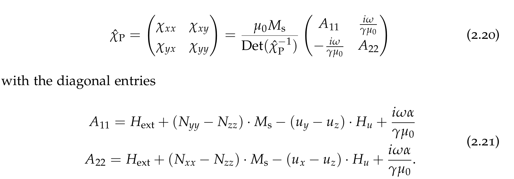
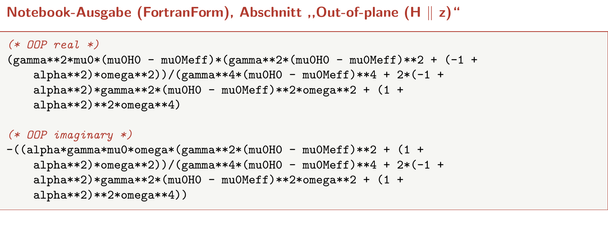
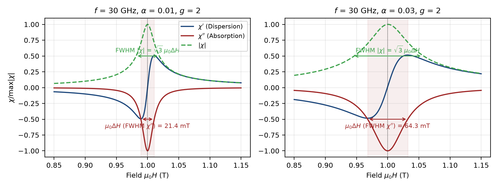
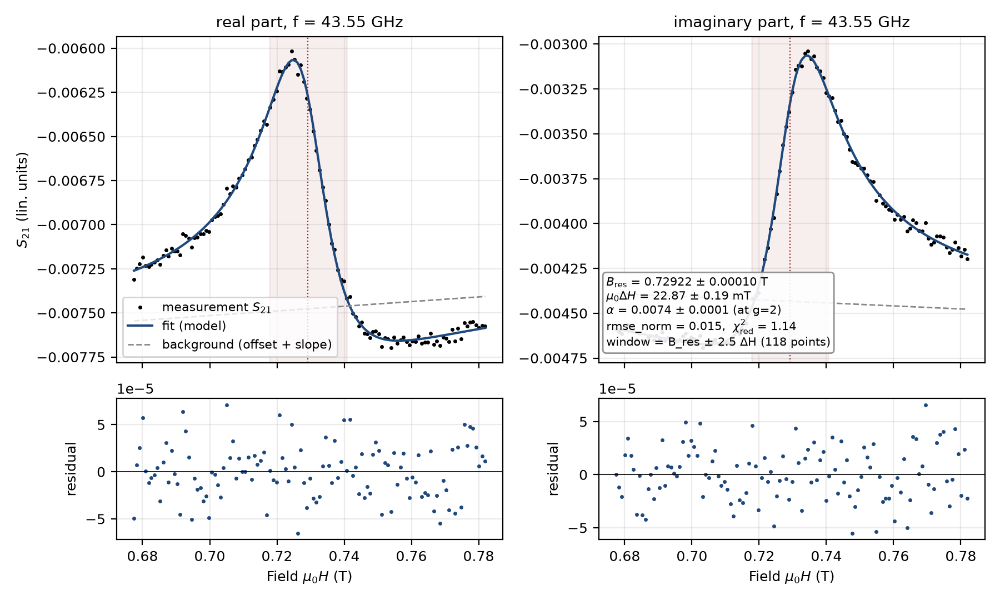
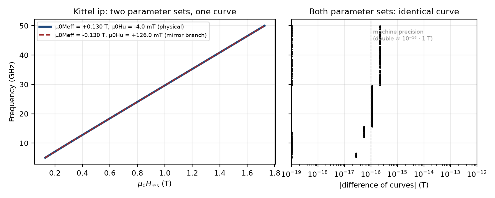

Physics and fit¶
Susceptibility (oop, notebook form, chi_oop) with d = µ0H − µ0M_eff, N = γ⁴d⁴ + 2(α²−1)γ²d²ω² + (1+α²)²ω⁴:
χ' = γ²µ0 d (γ²d² + (α²−1)ω²) / N
χ'' = −αγµ0ω (γ²d² + (1+α²)ω²) / N resonance: µ0H = µ0M_eff + ω/γ (internally µ0M_eff = B_res − ω/γ)
µ0ΔH = 2ωα/γ (FWHM of χ'', Müller 2.27)
Polder tensor (Müller eq. 2.20/2.21) → oop form from the notebook, taken over 1:1 (suszeptibilitaet.py):



Single-fit model (s21_modell, 8 parameters, Re/Im simultaneous, unweighted):
S21(B) = A·e^{iφ}·χ_oop(B; B_res, α, ω, γ) + (o_re + i o_im) + (s_re + i s_im)(B − B_ref)
| Parameter | Bound |
|---|---|
B_res |
inside the window |
alpha |
[1e-5, alpha_max], default alpha_max = 0.1 (GUI up to 2) |
phi |
[−2π, 2π] |
A, offsets, slopes |
free |
Optimizer: lmfit leastsq (Levenberg–Marquardt/MINPACK), bounds via MINUIT transform, φ restart by π if covariance is missing. Data-driven start values; α_start = γ·FWHM(|χ|)/(2√3·ω).
Several modes (corridors, fit/korridor.py, fitte_mode): each mode has a corridor (anchors at a few frequencies, linear in between) and is fitted per frequency only on the points inside the corridor. Start B_res from the local dip, else from the neighbour; post-window ±2.5·ΔH inside the corridor. < 12 points or ΔH < 1.5 field steps → problematic. Kittel/LLG and export per mode.

Kittel / LLG (kittel_llg.py, curve_fit):
oop: B_res = µ0M_eff + 2πf/γ (2.24)
ip: B_res = √[(2πf/γ)² + (µ0M_eff/2)²] − µ0M_eff/2 − µ0H_u (2.26), bound µ0M_eff ≥ 0, internally g-parametrized
LLG: µ0ΔH(f) = µ0ΔH_0 + (4π/γ)·α·f (2.28), γ taken from Kittel
Default unweighted (as FTF); option w = 1/u². absolute_sigma=False: errors scale with point scatter. u(g) = ħ/µ_B·u(γ); u(α)/α = √[(u(m)/m)² + (u(γ)/γ)²].

Adjustable (Ctrl+P): g (start), fix γ, geometry oop/ip, window factor 8, R² thresholds 0.9, weighting off, α upper bound 0.1 (down to 0.00001; lower bound then α_max/100), α plausibility limit (0 = α_max/2, down to 0.00001), post-window 2.5, resonances per linescan 1, confirm refits on. Storable as default (File → Settings).
Sources: Müller 2023 ch. 2; notebook Chi_Fit_Functions_and_Inductances_2020-04-06.nb; Maier-Flaig 2018; protocol 2026-05-08; ABW/GUM.